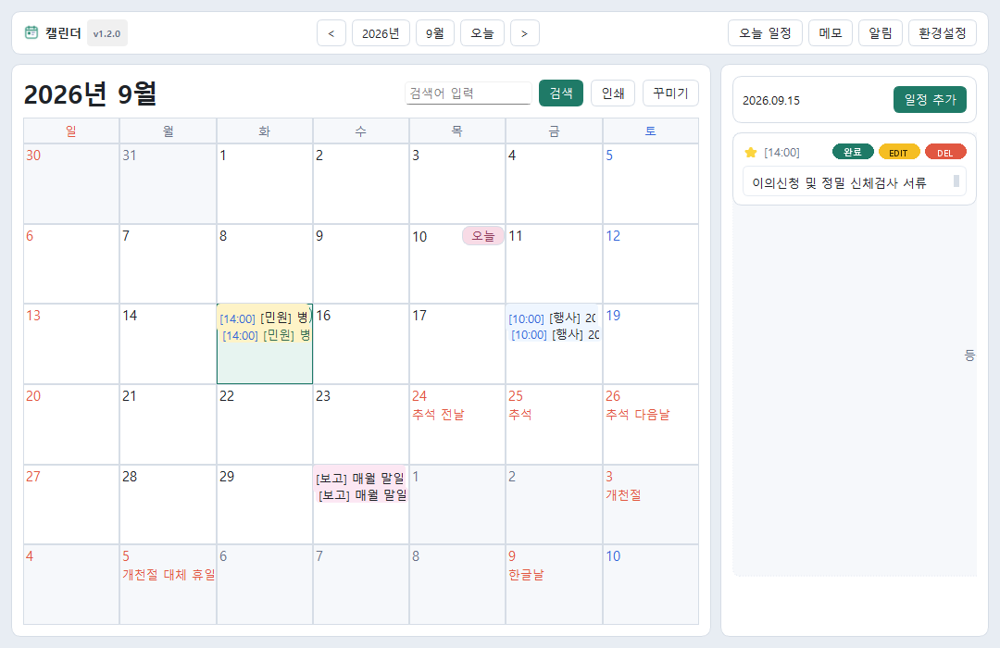
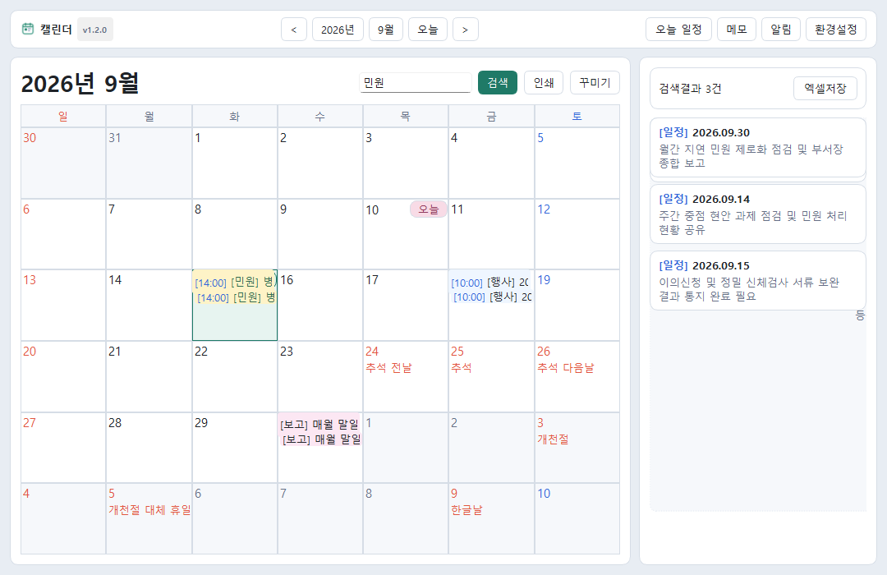
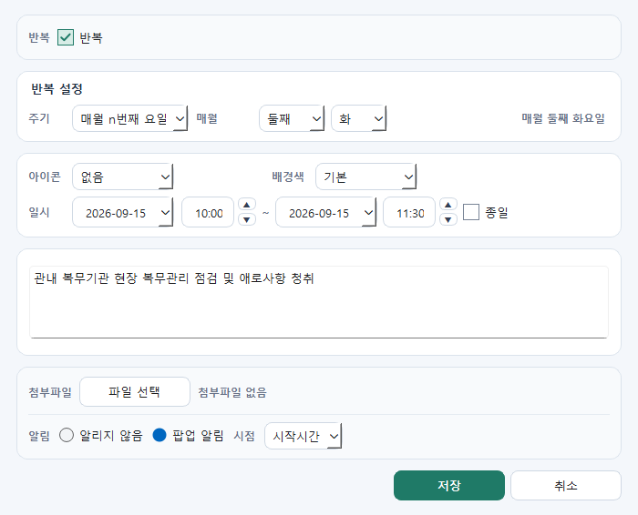
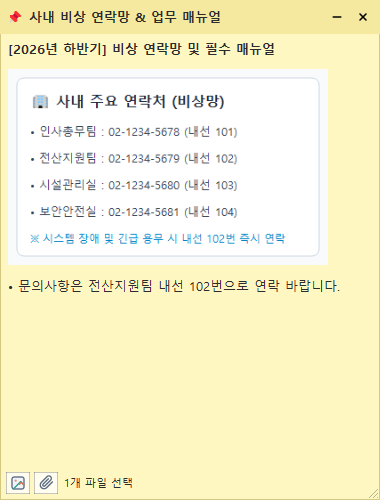

| 과 제 명 |
행정망 환경 맞춤형 로컬 업무 캘린더 『TaskCalendar』 구축
- 민원 마감 및 행사 일정 사전 알림과 스마트 메모를 통한 실무 생산성 향상 -
|
||
| 제안 배경 및 필요성 |
□ 민간 상용 캘린더의 클라우드 서비스 전환에 따른 행정망 도입 한계
○ (네트워크 통신 강제화) 기존 민간 상용 캘린더·메모 소프트웨어 대다수가 최근 온라인 계정 로그인, 클라우드 서버 동기화, 상시 외부 네트워크 통신을 필수로 요구하여 내부 행정망 PC 설치 및 운용 불가
○ (독립형 로컬 도구 부재) 외부 통신 없이 행정망 PC 자체에서 안전하게 독립 구동되는 공공 실무 맞춤형 캘린더 소프트웨어 부재
□ 민원 처리 마감 및 주요 행사·회의 일정 관리 애로
○ (법정 기한 준수 부담) 병역판정검사 이의신청, 민원 사무 등 법정 처리기한이 지정된 업무의 적기 처리를 위한 직관적 데스크톱 알림 수단 부족
○ (각종 행사·회의 준비 누락) 입영 행사, 병역진로설계 설명회, 정례 회의 등 부서별 주요 행사의 식순·준비사항을 챙기는 과정에서 종이 메모 분실 및 일정 중복 발생
□ 민원·행사 관련 업무 서류 탐색 매몰비용 발생
○ 행사 계획서(HWP), 참석자 명단, 민원인 제출 서류를 찾기 위해 파일 탐색기 폴더를 매번 재검색하는 반복적 행정력 낭비 상존
|
||
| 연구분야 | 고객지원 / 정보기획 / 행정운영 (전 부서 공통) | 소속기관 | 병무청 본청 / OO지방병무청 |
| 대표직원(1인) | 소속 : OO지방병무청 / 직급 : 주무관 / 성명 : O O O | 참여인원 | 소속 : OO지방병무청 / 직급 : 주무관 / 성명 : O O O 외 O명 |
| 과 제 개 요 및 추 진 내 용 | |||
| 워크메이트 활용 (가점-5점) |
□ 병무청 내부 [지식·규정 RAG 질의응답]을 통한 실무 기한 확인 및 캘린더 연계
○ 복잡한 민원 법정 처리기한 및 보완 시한 RAG 즉시 확인
- 직원이 개별 민원 사무별 법정 처리기한(이의신청, 재검사, 병역처분변경 등) 및 서류 보완 규정을 워크메이트에 자연어로 질의
ㆍ(질의 예시) "병역처분변경원 접수 시 법정 처리기한 및 서류 보완 통지 시한 규정 알려줘"
- 워크메이트가 내부 훈령·편람 지식에서 검색·답변한 정확한 처리기한을 확인
○ 주요 행사·통지 업무 필수 사전 절차 및 시한 확인
- 입영 행사, 설명회, 복무기관 실태조사 등 법령·지침상 정해진 사전 통지 시한 및 준비 절차를 워크메이트 RAG로 검색
ㆍ(질의 예시) "사회복무요원 복무기관 실태조사 사전 통보 기한 규정 알려줘"
○ TaskCalendar 즉시 연계 및 기한 누락 원천 방지
- 워크메이트 답변으로 확인된 마감 시점을
TaskCalendar에 등록하고, 마감 1일 전·3일 전 다단계 사전 알람을 가동하여 기한 초과 및 행정 착오 원천 방지💡 직원 중심 실무 연계 프로세스 (규정 질의 ➔ 기한 확인 ➔ 알람 등록)
① 워크메이트 RAG 질의
직원이 민원 법정기한 및 행사 사전 통지 규정을 자연어로 질의
② 정확한 처리 시한 확인
워크메이트가 내부 훈령·편람 지식을 검색하여 정확한 기한 답변
③ TaskCalendar 알람 등록
확인된 기한을 캘린더에 마감일로 등록하고 사전 알람 가동
|
||
| 활용 모델 |
□ 제미나이(Gemini), 구글 플로우(Google Flow), AI 워크메이트 복합 활용
○ 제미나이 (Google Gemini): 민원 지침 및 행사 계획 문서 내 핵심 마감일, 필수 체크리스트 요약 텍스트 정제
○ 구글 플로우 (Google Flow): 캘린더 UI 테마 에셋 제작 및 일정 등록 워크플로우 도식화
○ AI 워크메이트 (RAG 질의응답): 병무행정 법령·훈령·편람 지식베이스 질의응답을 통한 법정 처리기한 및 행사 절차 확인
|
||
| 구현 방법 및 프로그램 특징 |
□ 바이브 코딩(Vibe Coding)을 통한 Python 기반 행정망 전용 소프트웨어 구현
1. 메인 캘린더 (Main Calendar) 엔진 및 직관적 인터랙션
- 날짜 셀 빈 공간 더블클릭: 원하는 날짜 빈 영역 더블클릭 시 [일정 등록] 팝업 0초 즉각 호출
- 마우스 휠 월 전환: 캘린더 영역에서 마우스 휠 스크롤 시 전월/익월 부드러운 즉시 전환
- 사이드바 통합 관제: 오늘 일정, 선택일 일정, 메모 목록을 단일 화면 우측에서 일괄 조회·정렬
- 공공 공휴일 자동 반영: 정부 법정 공휴일 및 대체공휴일 데이터 내장으로 행정 휴무일 자동 계산
 < 그림 1. TaskCalendar 메인 캘린더 및 우측 사이드바 통합 관제 화면 >
2. 실시간 통합 검색 (Search Engine) 및 엑셀 저장 (Export) 지원
- 제목 및 본문 통합 부분일치 검색: 검색창에 키워드 입력 시
NOCASE(대소문자 무구분)로 제목과 상세 설명 본문을 동시 탐색- 사이드바 실시간 검색 결과 전환: 검색어 입력 즉시 우측 사이드바가 [검색결과 N건] 모드로 전환되어 일치하는 일정 리스트 표출
- 원클릭 캘린더 날짜 점프: 검색 결과 목록에서 특정 항목 클릭 시 해당 날짜로 캘린더 화면이 즉각 이동하며 수정 팝업 호출
- 검색 결과 원클릭 [엑셀저장] 지원: 검색된 민원·행사 목록을 엑셀(
.xlsx) 파일로 1초 만에 일괄 추출하여 보고서 작성 및 행정 증빙자료로 즉시 활용 < 그림 2. 통합 검색 기능 ('민원' 키워드 검색 결과 3건 표출 및 [엑셀저장] 지원 화면) >
3. 공공 업무 특화 다차원 반복 일정(Advanced Recurrence) 설정 엔진
- 매일 (Daily): N일 간격(1일마다, 3일마다 등) 주기적 반복 지원
- 매주 (Weekly) 및 요일 다중 선택: N주마다 특정 요일(월/수/금 등 복수 요일) 지정 반복 (예: 매주 월요일 주간간부회의, 화·목 정기 순찰)
- 매월 특정일 (Monthly by Day): 매월 N일(예: 매월 10일 지출결의, 25일 정기보고) 반복
- 매월 말일 자동 계산 (Month-End): 28일, 30일, 31일 등 월마다 달라지는 말일을 시스템이 자동 판별하여 매월 마지막 날짜에 정확히 반영 (월말 정기 결재 등)
- 매월 N번째 특정 요일 (Monthly by N-th Weekday): 매월 N번째 특정 요일(예: 매월 둘째 주 화요일 정기 실태조사, 넷째 주 금요일 정례회의) 지정 반복
- 매년 (Yearly): 연례 정기 행사, 기념일, 연간 법정 감사 등 1년 주기 반복
- 반복 일정 완료 이력 독립 관리: 반복 일정 중 오늘 일정을 '완료' 체크하더라도 다음 주기 반복 일정은 그대로 유지되는 독립 이력 체계 구현
 < 그림 3. [일정 등록] 다차원 반복 설정 UI (매월 둘째 주 화요일 등 정밀 반복 주기 지정) >
4. 스마트 플로팅 메모 (Smart Floating Memo) 혁신
- 바탕화면 100% 무결 상태 복원: 재부팅 후에도 메모의 위치, 창 크기, 핀 고정(📌) 상태 완벽 유지
- 원클릭 슬림 접기/펼치기 (`-`/`+` 동적 토글): 메모 상단 `-` 버튼 클릭 시 제목 표시줄(34px)로 슬림하게 접혀 바탕화면 작업 공간 확보, `+` 클릭 시 원상태 복원
- 캡처 이미지 메모 본문 즉시 삽입: 캡처 도구(
Win+Shift+S)로 복사한 사내 비상연락망, 당직 매뉴얼, 행사 배치도를 단축키(Ctrl+V)로 메모 본문에 즉시 삽입- 업무 첨부파일 양방향 탐색기 연계: 파일을 메모로 드래그 앤 드롭 자동 첨부, [파일 열기](연결 프로그램 실행) 및 [파일 폴더 열기](해당 폴더 탐색기 호출 후 파일 자동 하이라이트) 지원
- 미연계 잔여 파일 자동 정리: 메모 삭제 시 로컬 디스크에 남는 미연계 첨부파일을 감지하여 동반 삭제, 저장공간 낭비 및 정보 유출 방지
- 항상 위 핀 고정(📌) 및 투명도 조절: 최상단 화면 고정 및 투명도 슬라이더 지원으로 배경 문서와 대조 작업 가능
- 지연 시간 없는 즉각 닫기 최적화: 닫기(
X) 클릭 시 지연 없이 즉시 닫히며 백그라운드 자동 저장 < 그림 4. 스마트 플로팅 메모 (사내 비상연락망 이미지 삽입, 파일 첨부 및 폴더 열기 연계) >
5. 골든타임 사전 알람, 전역 단축키 및 공공 보안 체계
- 다단계 사전 팝업 알람: 시작 5분·10분·15분·30분·1시간 전 사전 팝업 알람 및 5분 뒤 다시 알림(Snooze) 지원으로 기한 누락 원천 방지
- 전역 단축키(Global Hotkey): 민원 전화 통화 중
Ctrl+Shift+M으로 1초 빠른 메모 호출, 문서 작업 중 Ctrl+Shift+C로 캘린더 즉각 호출- Windows DPAPI 하드웨어 암호화: SQLite DB를 OS 계정 고유 키로 암호화 저장(
encrypt_work_db.py), PC 분실·복제 시 데이터 열람 원천 차단- 외부 통신 제로(Zero-Network) & 무설치 바이너리: 외부 클라우드 통신 100% 배제 및 단일 무설치 파일(
Calendar.exe, RAM 50MB) 가동 |
||
| 데이터활용 |
□ 공공데이터포털 특일 정보 Open API 연계 및 활용
○ 공공데이터포털(data.go.kr) 『특일 정보제공 서비스 Open API』 연계
- 한국천문연구원 및 행정안전부 제공 법정 공휴일, 대체공휴일, 국경일 공식 데이터 연동
○ 행정 민원 법정 처리기한 및 근무일(영업일) 자동 계산 기준 제공
- 공공데이터 기반 휴무일을 시스템에 자동 반영하여, 민원 사무 법정 처리기한 산정 시 공휴일 제외 및 적기 처리 시점의 정확한 산출 지원
□ 행정망 정보보안 및 개인정보 보호 조치 사항
○ 외부 네트워크 통신 차단에 따른 보안성 확보 (Zero-Network)
- 외부 인터넷망 연동 및 비인가 클라우드 통신을 100% 배제한 오프라인 완결형 로컬 아키텍처 구축, 내부 행정망 보안 규정 완벽 충족
○ Windows DPAPI(Data Protection API) 기반 로컬 DB 하드웨어 암호화
- 사용자 PC 로컬에 저장되는 일정·메모 데이터베이스(SQLite) 전체를 Windows 로그인 계정 고유 마스터 키로 암호화 저장(
encrypt_work_db.py)- 타인이 PC 하드디스크를 무단 복제하거나 분실하더라도 비인가 열람 및 유출 원천 차단
○ 개인정보 보호법 준수 및 고유식별정보 비저장 원칙
- 주민등록번호, 계좌번호 등 민감한 개인식별정보 저장을 원천 배제하고, 일정명·시간·장소 등 순수 업무 메타데이터 중심으로만 관리
○ 메모 파기 시 첨부파일 안전 동반 삭제
- 메모 삭제 시 로컬 디스크에 임시 저장된 관련 첨부 서류(HWP, PDF 등)를 감지하여 동반 파기함으로써 중요 행정 자료 방치 위험 차단
|
||
| 세부 개선 내용 | 현 행 (AS-IS) | ||
|
□ 민간 상용 소프트웨어 사용 불가에 따른 일정 관리 공백: 최신 민간 소프트웨어의 클라우드·로그인 강제화로 행정망 설치 불가, 종이 달력이나 수기 메모 의존
□ 민원 마감 및 행사 일정 관리 한계: 담당자 기억에 의존하여 행사 사전 준비 누락 및 민원 법정 처리기한 임박에 따른 급박한 대처 발생
□ 행사 서류 및 연락처 탐색 지연: 행사 계획서, 식순, 민원인 메모를 찾기 위해 파일 탐색기와 결재함을 반복 검색하는 비효율 발생
|
|||
| 개선 방향 | 개 선 (TO-BE) | ||
| (TO-BE) |
□ 행정망 전용 독립형 캘린더 도입: 클라우드 연동 없는 순수 로컬 구동으로 행정망 보안 규정 완벽 준수 및 단일 무설치 가동
□ 사전 알람 기반 민원·행사 일정 관리 철저: 행사 시작 및 민원 마감 5분~1시간 전 팝업 사전 알림으로 준비 누락 및 기한 초과 원천 차단
□ 스마트 플로팅 메모로 행사·민원 현장 대응력 강화: 행사 식순 캡처 이미지 즉시 삽입, 관련 계획서 [폴더 바로 열기], 통화 중 1초 단축키 메모 지원
|
||
| 기대 효과 |
□ 정량적 기대효과 (행정 효율화 및 시간 절감)
○ 행사 준비 및 민원 접수 시간 단축: 행사 계획서 및 연락처 탐색 시간 단축 (건당 3~5분 소요 ➔ 10초 이내 즉각 확인)
○ 민원 처리기한 준수율 제고 및 행사 준비 누락 제로화: 다단계 사전 알람을 통해 기한 임박 민원 적기 처리 및 주요 행사 사전 체크리스트 누락 0건 달성
○ 단축키 기반 신속한 민원 메모 작성: 전화 통화 중
Ctrl+Shift+M 호출로 민원 요지 즉시 기록 (기록 지연 시간 0초 달성)□ 정성적 기대효과 (업무 만족도 및 행정 신뢰도 제고)
○ 민원 응대 전문성 및 신속성 향상: 통화 중 관련 민원 서류 및 선례 즉시 확인으로 정확하고 신속한 대민 답변 제공
○ 행사 진행의 안정성 및 부서 간 협업 증진: 식순표 및 참석자 명단 상시 거치를 통해 매끄러운 행사 진행 지원 및 일정 중복 예방
○ 직원 직무 피로도 경감: 기억에 의존하던 마감일 압박에서 벗어나 사전 알람 중심의 여유 있는 계획적 행정 구현
|
||